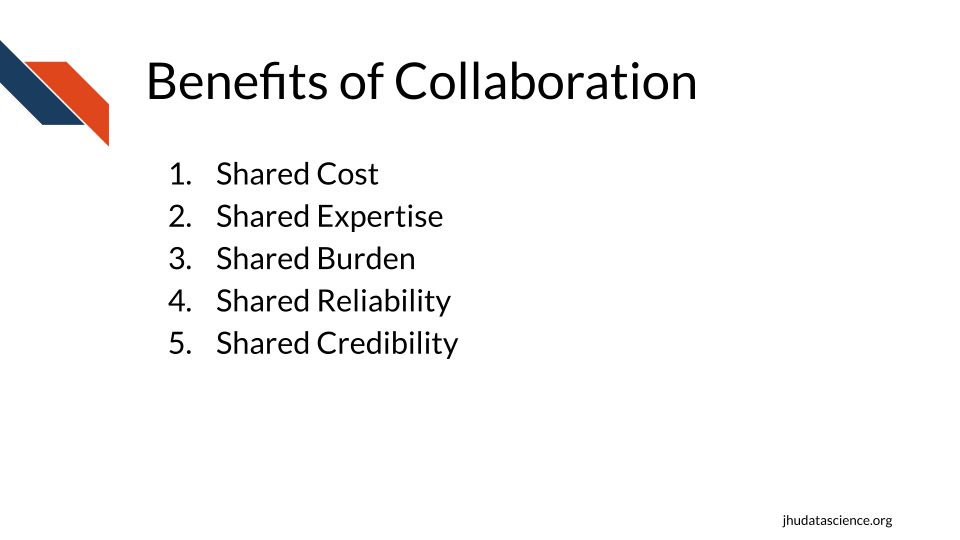
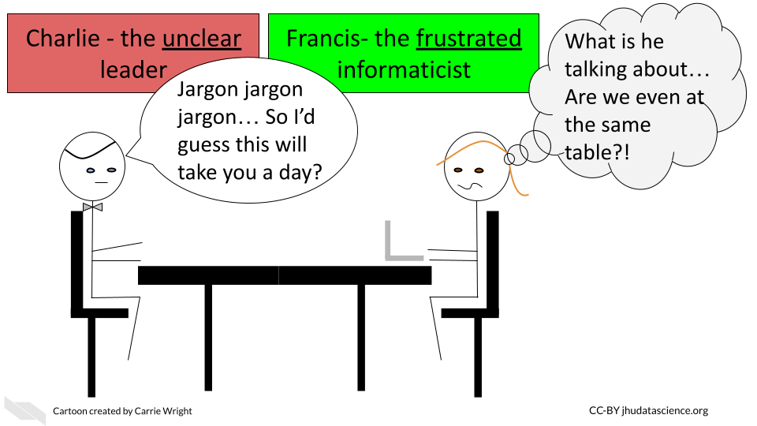

Chapter 13 Collaborating with informatics experts
Studies investigating biology research labs over history indicate that collaboration has been on the rise since the 1950s (vermeulen_understanding_2013?) and that the rate continues to increase (sonnenwald_scientific_2007?). Indeed the size of biology research teams appear to have doubled from 1955 to 1990 (vermeulen_understanding_2013?). But why?
13.0.1 The benefits of collaboration
- Shared cost
Research often involves expensive technology, thus it is cost effective to share resources.
- Shared expertise
Now that technology affords answering in some cases more complex or broader research questions, it is often more effective to employ multiple contributors with different knowledge, skills, and perspectives. Researchers have noted that their own concept of their field changed as a result of working with investigators from other disciplines. Thus this can lead to innovation (makinen_patterning_2020?).
- Shared burden
Doing part of the work for a project using the knowledge and skills that you are most comfortable with and seeking help from others who are more knowledgeable on other research aspects can be a more efficient strategy.
- Shared reliability
Including multiple team members who can each evaluate the research can improve the reliability of a project, as mistakes can be found by other members.
- Shared credibility
Collaborations involving experts of multiple areas can improve the perceived credibility of the work by others.

13.0.2 Potential challenges
There are always challenges when collaborating with others, but some of these are particularly enhanced in multi-disciplinary teams. Here are some challenges that you may encounter when a collaboration involves informatics experts.
Bad collaboration:

- Communication Differences
Extra care needs to be taken to ensure that communication across groups is effective.
Typically researchers will not meet as often with a collaborator as they would with an internal team member. Therefore, poor communication in a collaboration can lead to more costly misdirection and thus wasted time and effort.
Furthermore, as investigators often have different backgrounds, differences in jargon and language can make communication more challenging.
Having internal team members with some familiarity with informatics can be very beneficial for translating discussions with collaborators who are informatics experts.
One solution to this is to have trainees work in both labs. This can be especially beneficial for the trainee who will become accustomed to two research styles and will learn a diverse set of skills. This allows the trainee to potentially have their own multi-disciplinary lab in the future (makinen_patterning_2020?).
Another important method that can help resolve this issue is to have members provide educational seminars for participating members about the fundamentals of their work.
- Different research style and goals
Beyond differences in language, differences in research style and goals can lead to conflict.
“Scholars’ different styles of thought, standards, research traditions, techniques, and languages can be difficult to translate across disciplinary domains” (makinen_patterning_2020?).
Making clear research standards and goals, as well as outlining clear specific tasks at the beginning of a project can help to avoid this issue. Furthermore, meeting consistently throughout the duration of a project can also help to make sure that standards are maintained. Additionally, these meetings should include discussions about intellectual property, authorship, leadership, and defining what success looks likes to each of the various members. Defining these details early can avoid major conflict later.
Furthermore, it is critical to keep in mind the diversity of career goals of research team members, as junior team members may have a challenging time persuading others of their independence and contributions when they work on largely collaborative projects. It is also necessary to ensure that junior members have time to devote to their own research programs. (sonnenwald_scientific_2007?) Support should be provided for these junior collaborators by more senior collaborators.
- Different capabilities
Research of multi-disciplinary collaborations has revealed that when collaborating members are unclear of how their expertise and work contributes to the project, they are less motivated and fell less valued.
Working with members of different backgrounds to determine how their expertise can contribute to the project, as opposed to simply assigning them a task, will not only help with morale, but it can also better define how a collaborator can further contribute to a project in ways that you may not already expect (makinen_patterning_2020?).
- Reduced sense of responsibility
Another concern of collaboration is that team members may feel less responsibility or commitment to a project than for a project within their own lab.
Defining tasks and expected due dates can help reduce this issue. Discussions to establish due dates should always include team members with expertise in each area of science, as tasks may not take the amount of time that another researcher would expect. It is a common misconception that informatics tasks take less time than the tasks actually take in reality.
- Research is dynamic
Research always has an element of trial and error. Protocols may change and new scientific questions may emerge. Frequent meetings with all group members to understand the dynamics of the project are critical. Furthermore, flexibility and understanding is required. It should be expected that aspects about the project will change.
- Different levels of resources
Particularly when collaborating with community members, community colleges, and institutions that are “Equity-oriented” and serving populations that have historically been marginalized or “minoritized” (blake_case_2017?), it is important to keep in mind that large differences in resources may exist between collaborating members.
Sharing and discussing budget information early and often can help research members to understand what expectations are reasonable and how collaboration partners may best assist one another.
It is also important to recognize that:
“There is a common misconception that the lack of physical experimentation and laboratory supplies makes analysis work automated, quick, and inexpensive” (carpenter_cultivating_2021?).
However:
“In reality, even for well-established data types, analysis can often take as much or more time and effort to perform as generating the data at the bench. Moreover, it typically also requires pipeline optimization, software development and maintenance, and user interfaces so that methods remain usable beyond the scope of a single publication or project” (carpenter_cultivating_2021?).
Don’t forget to provide some budget for your informatics collaborators, as their time ultimately does cost money and there may be computational costs that you may not be aware of.
![Ways to overcome collaboration challenges 1) To avoid issues with communication differences take care, educate each other, considering co-mentoring trainees or hiring experts that speak your collaborator's language. 2) To avoid issues with different styles or goals, make unified standards and discuss what success means early and often. 3) To avoid issues with different capabilities, Make sure everyone has defined roles and tasks that actually use their expertise.4) To avoid issues with a reduced sense of responsibility, keep everyone motivated with defined due dates (discuss dates to make sure they make sense!). 5) To avoid issues with the fact that research is a dynamic process, expect change and occasional failure. 6) To avoid issues with differences in resources, be mindful of potential budget and resource differences.](12-collaboration_files/figure-html/1OU5qeRgN_fojGbcyu2qEdwlcKpDO6BveWtYW_u1Hqd4_gdd469195e0_0_5.png)